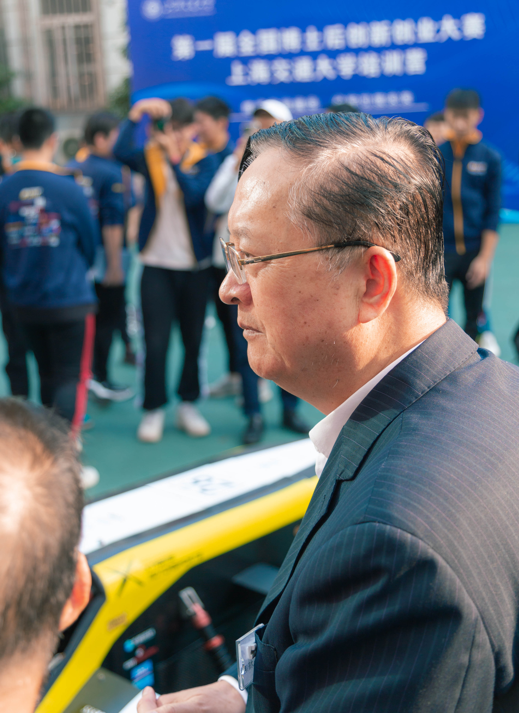
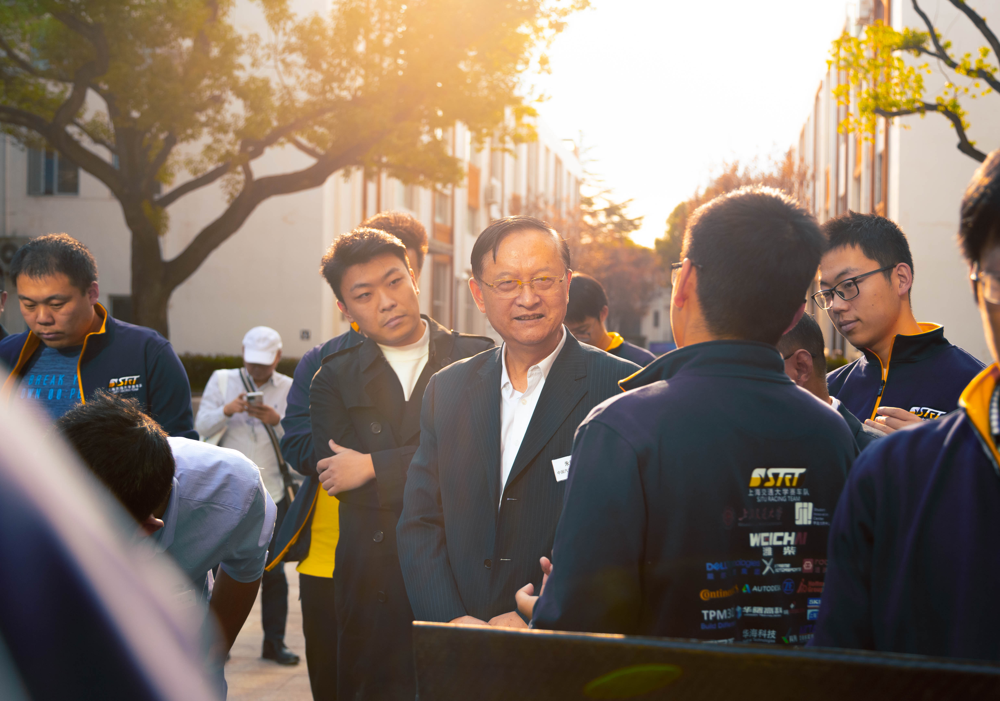
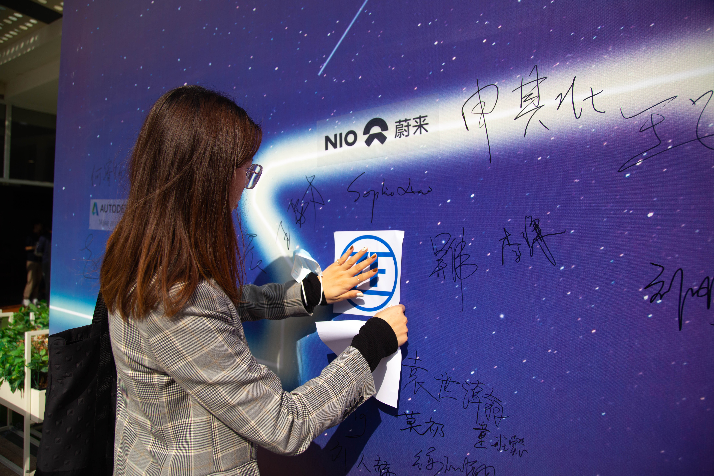
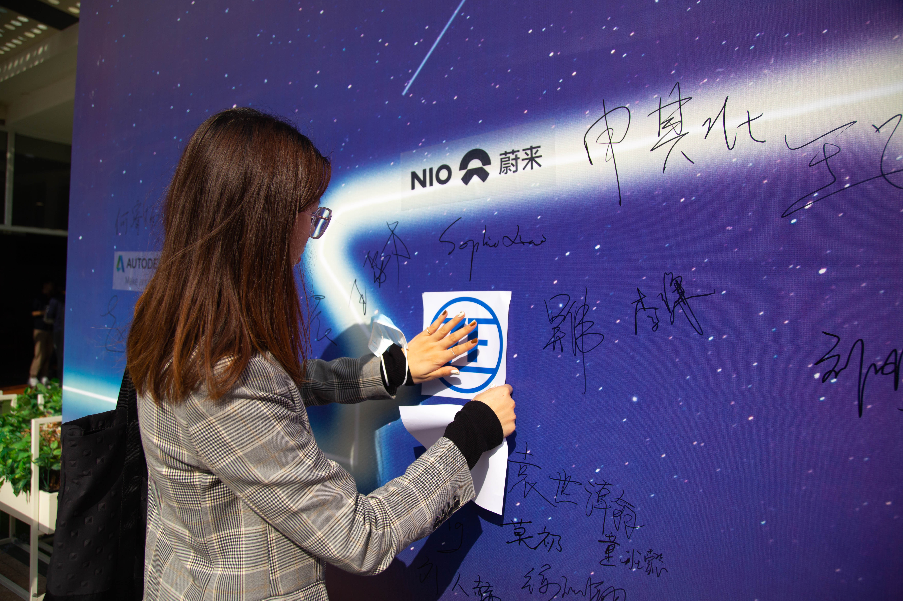

Business and Media group The T Business and Media group IS a SPECIAL group among the racing teams. The main task of the traffic management group is to focus on the team's media activities and commercial activities.


The team's official Weibo account, B station and wechat official account are all operated by the operation management team. The content we publish on major platforms includes our daily work, wonderful moments of activities we host or participate in, and many wonderful videos. Whenever there are cooperative activities, there are operators. In the early stage of the activity, we need to act as a bridge between the team and other groups. We need to act as the host of the activity; After the activity, we will summarize, produce and release the wonderful content of the activity, so that more people can see us.
 The racing team, being a highly technical team, also spends a lot of money. In addition to the school support, we also cooperated with a large number of social enterprises, and got a lot of sponsorship. The operations team is responsible for communicating with existing sponsors and identifying potential sponsors. In addition, there are commercial scores for the races the teams compete in each year, so the operations team needs to write a business report for the team's ultimate masterpiece each year.
 
